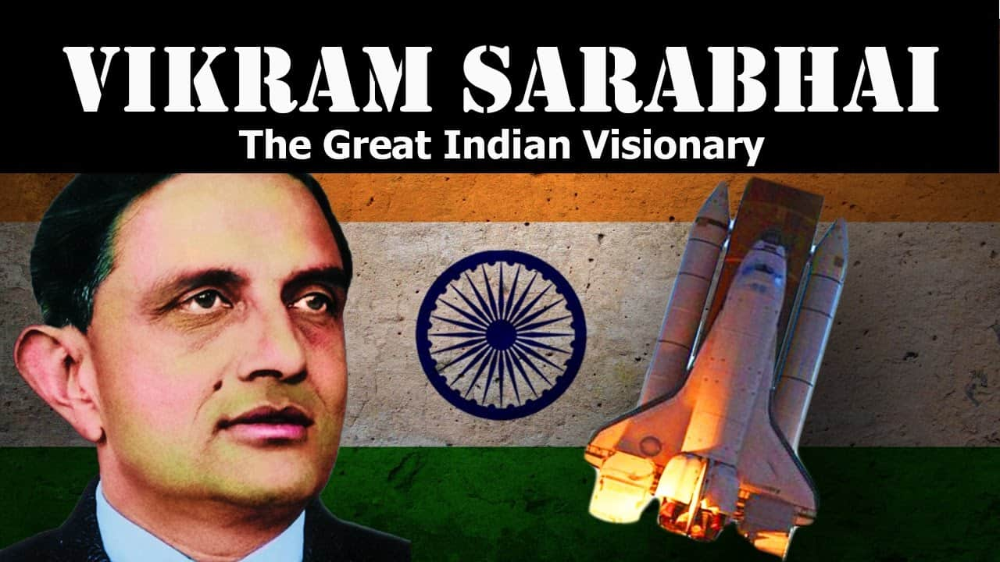

Dr.Vikram Sarabhai
Father of the Indian Space Program

Vikram Ambalal Sarabhai (12 August 1919 – 30 December 1971) was an Indian physicist and astronomer who initiated space research and helped develop nuclear power in India. He was honoured with Padma Bhushan in 1966 and the Padma Vibhushan (posthumously) in 1972. He is internationally regarded as the Father of the Indian Space Program.
Personal life
Vikram and Mrinalini Sarabhai (1948) Son of Ambalal Sarabhai, he came from the famous Sarabhai family from India who were major industrialists committed to the Indian independence movement. Vikram Sarabhai married the classical dancer Mrinalini in 1942. The couple had two children. His daughter Mallika gained prominence as an actress and activist, and his son Kartikeya too became an active person in science. During his lifetime, he practiced Jainism. He attended Gujarat College, Ahmedabad, but later moved to the University of Cambridge, England, where he took his tripos in natural sciences in 1940. In 1945 he returned to Cambridge to pursue PhD and wrote a thesis, “Cosmic Ray Investigations in Tropical Latitudes,” in 1947
Proffessional life
Known as the cradle of space sciences in India, the Physical Research Laboratory (PRL) was founded in 1947 by Vikram Sarabhai.[8] PRL had a modest beginning at his residence, the "RETREAT", with research on cosmic rays. The institute was formally established at the M.G. Science Institute, Ahmedabad, on 11 November 1947[9] with support from the Karmkshetra Educational Foundation and the Ahmedabad Education Society. Prof. Kalpathi Ramakrishna Ramanathan was the first Director of the institute. The initial focus was research on cosmic rays and the properties of the upper atmosphere. Research areas were expanded to include theoretical physics and radio physics later with grants from the Atomic Energy Commission. He led the Sarabhai family-owned business conglomerate. His interests varied from science to sports to statistics. He set up the Operations Research Group (ORG), the first market research organization in the country.
Death
On 30 December 1971, Sarabhai was to review the SLV design before his departure for Bombay the same night. He had spoken to A. P .J. Abdul Kalam on the telephone. Within an hour of the conversation, Sarabhai died at the age of 52 due to cardiac arrest in Trivandrum (now Thiruvananthapuram). His body was cremated in Ahmedabad.
Distinguished positions
1.President of the Physics section, Indian Science Congress (1962) 2.President of the General Conference of the I.A.E.A., Vienna (1970) 3.Chairman of the Atomic Energy Commission of India (1966–1971)[10][11] 4.Vice-president, Fourth UN Conference on 'Peaceful uses of Atomic Energy' (1971) 5.Founder and Chairman (1963–1971), Space Applications Centre[12]
Legacy
Sarabhai on a 1972 Indian stamp The Vikram Sarabhai Space Centre, (VSSC), which is the Indian Space Research Organization's lead facility for launch vehicle development located in Thiruvananthapuram (Trivandrum), capital of Kerala state, is named in his memory. Along with other Ahmedabad-based industrialists, he played a major role in setting up of the Indian Institute of Management, Ahmedabad. Indian Postal Department released a commemorative Postal Stamp On his first death anniversary (30 December 1972) In 1973, the International Astronomical Union decided that a lunar crater, Bessel A, in the Sea of Serenity will be known as the Sarabhai crater.[13][14] The lander on India's moon mission Chandrayaan-2 which was to land near the South Pole of the moon on Sep 20, 2019 was named Vikram in his honour. Vikram A Sarabhai Community Science Centre (VASCSC) located in Ahmedabad, Gujarat is named after him. Vikram Sarabhai established this institute around the 1960s. Former World Quiz Champion Vikram Joshi was named after him. A Space Museum was dedicated to him at B M Birla Science Centre, Hyderabad on 26 July 2019. The museum was curated by Pranav Sharma.[15][16] On his 100th birthday on 12 August 2019, the Indian Space Research Organization (ISRO) announced an award in the name of Vikram Sarabhai. The Vikram Sarabhai Journalism award in Space Science Technology and Research will be given to those journalists who have contributed to the fields of space science, applications, and research.